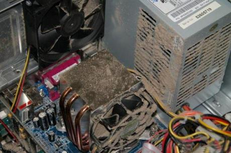

|
We don't just specialise is providing low cost PAT Testing but now we also
offer low cost I.T. Services which would suit any small business or
individual.
Our engineer's have over 15 years experience in system building
and system upgrades, we are fully trained in all versions of
Microsoft operating systems (OS) from MS-DOS to
Windows 7.
Dust Removal Only - £10 per system
This service is only for dust removal within the system case, dust within the
system case can cause the system fan's to stop working resulting in damage to
the CPU, motherboard and PSU unit which can make your system non-functional
What we do is clean out the system case from dust and ensure your system is in prime condition.
Full System Cleanup - £25 per system
This service is a full system cleanup inside and out, you get:-
(1) System Case Dust Removal
(2) Operating System Cleanup
(3) Malicious Software & Virus Checks
Hard Drive (HDD) Upgrade - £ as per quote
We use state of the art HDD drive partition cloning software, so no reinstalling of operating systems
or loss of files and settings. We even offer this service for notebooks too.
Memory (RAM) Upgrade - £ as per quote
We get our memory direct from the manufactures so you get the best price possible. We can cater for notebook's and full system setups.
Broadband Router Installation - £40
Confused about ADSL filters and wireless router setup or maybe your not sure what you are doing. We take the confusion out by completing the installation for you.
*Unfortunately our I.T. Services are only available for local areas of Kent.
|